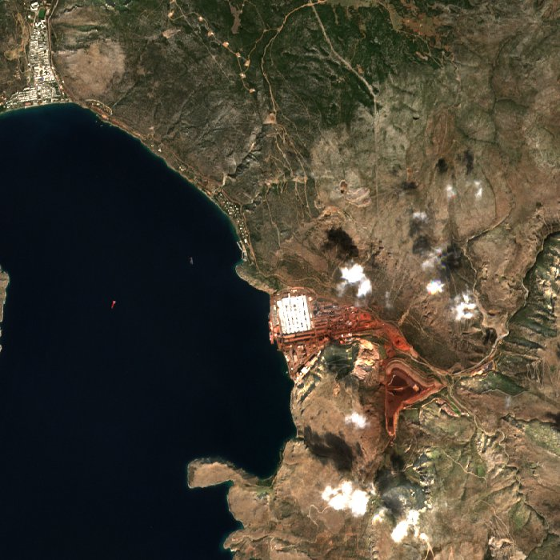
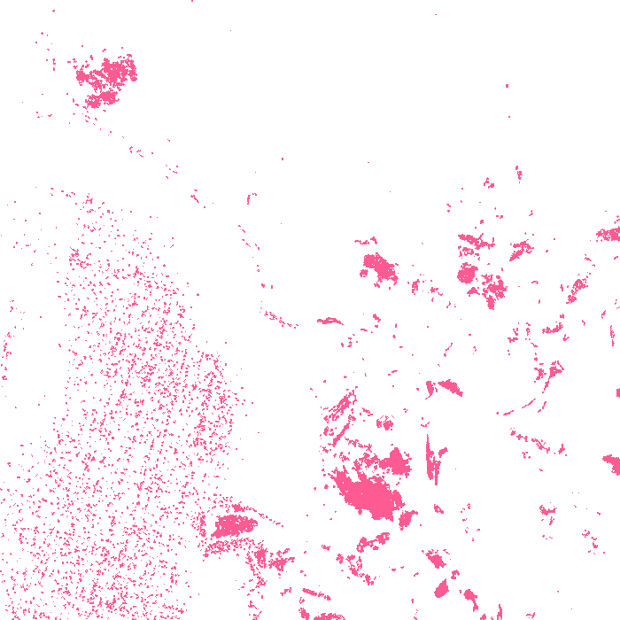

Metlen gallium project
Europe's main bet to cut its reliance on Chinese gallium.
- Material
- Gallium
- Stage
- Planned project
- Place
- Agios Nikolaos, Boeotia, Greece
- Operator
- Metlen (Aluminium of Greece)
- Coordinates
- 38.37° N, 22.69° E (approximate)
- Expected online
- Q3 2027


Seen from orbit
- Heat
- 0 of the last 7 days and 0 of the last 30 had furnace-hot pixels within 6 km (NASA FIRMS).
- Surface temperature
- Landsat, 19 Oct 2026: typical ground 22.1 °C; 1.7 ha more than 8 °C warmer than the land around it; hottest spot 8.7 °C above it.
- Radar
- Latest Sentinel-1 radar picture: 3 Nov 2026.
Signals show activity, not output. They are measured automatically and can be affected by weather, terrain and fires.
Facts
- Planned capacity: 50 t of gallium a year, commercial output from Q3 2027
- Selected as a Strategic Project under the EU Critical Raw Materials Act (2025)
- EIB approved €90 million, announced 15 January 2026
- Gallium was about $3,500/kg in October 2026, up from under $500 when Metlen decided to invest